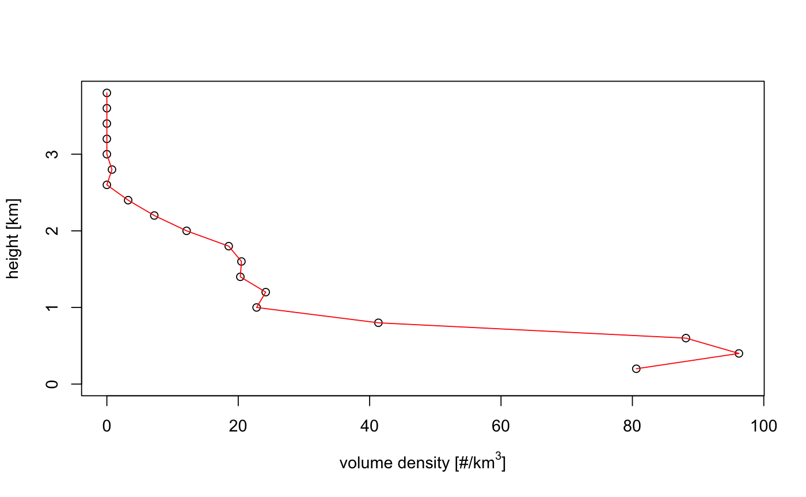
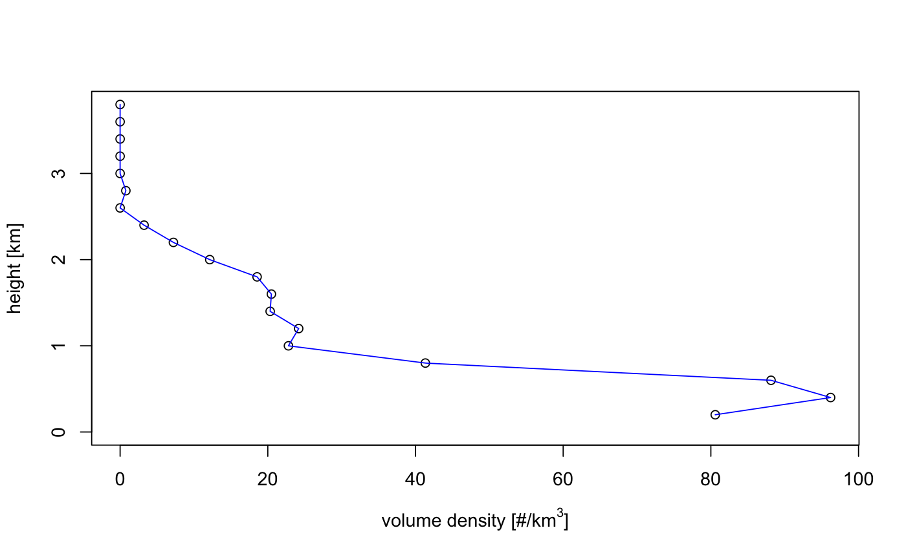

Plot a vertical profile (vp)
# S3 method for vp plot(x, quantity = "dens", xlab = expression("volume density [#/km"^3 * "]"), ylab = "height [km]", line_col = "red", line_lwd = 1, line.col = "red", line.lwd = 1, ...)
| x | A |
|---|---|
| quantity | Character string with the quantity to plot. See vp for list of available quantities.
|
| xlab | A title for the x axis. |
| ylab | A title for the y axis. |
| line_col | Color of the plotted curve. |
| line_lwd | Line width of the plotted curve. |
| line.col | Deprecated argument, use line_col instead. |
| line.lwd | Deprecated argument, use line_lwd instead. |
| ... | Additional arguments to be passed to the low level plot plotting function. |
data(example_vp) plot(example_vp)#> expression("volume density [#/km"^3 * "]")plot(example_vp, line_col = "blue")#> expression("volume density [#/km"^3 * "]")